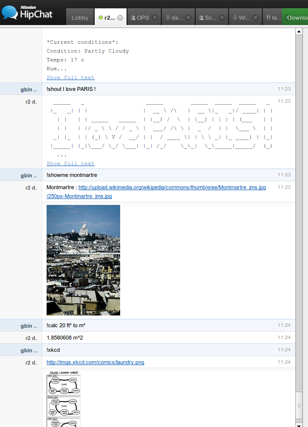

err - the pluggable jabber bot
err is a plugin based XMPP chatbot designed to be easily deployable, extensible and maintainable. It is written in python and it is based on jabberbot and yapsy with some minor modifications for the first one.
Brief History
At Mondial Telecom (http://www.mondialtelecom.eu), we needed a chat bot over XMPP so it can reach the non techie audience of the company. We liked it so much and we started to write so much features that we decided to make a more modular bot framework and share it.
Screenshot are like mushrooms, everybody loves them...

Want to give it a try right now ?
Just invite err@jabber.org from your favorite jabber/xmpp client.
Send it the message "!help" without quotes and it will show you what other commands it supports
Features
- Tested with hipchat and openfire but should be compatible with any XMPP/Jabber servers.
- Can be setup so a restricted list of persons have the administration rights
- Dynamic plugin architecture : the bot admin can install/uninstall/enable/disable plugins dynamically just by chatting with the bot.
- Supports MUCs (chatrooms)
- Can proxy and route one 2 one messages to MUC so it can enabler simpler XMPP notifiers to be MUC compatible (for example the jira XMPP notifier).
- Really easily extensible (see example below)
- Provides an an automatic persistance store per plugin
- an !help command that generate dynamically the documentation from the python docstrings of the commands
More details on the bot admin features can be found on the wiki : https://github.com/gbin/err/wiki/admin
Convinced, you want to try it for real ?
Head to the main github page and follow the installation instructions.
To see how it is easy to write your own commands
Head to the plugin dev tutorial